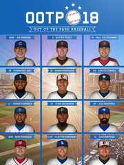

Out of the Park Baseball 18
Details
|  | |
| Playtime | Not Played |
| Last Activity | Never |
| Added | 10/22/2020 15:53:39 |
| Modified | Never |
| Completion Status | Not Played |
| Library | Steam |
| Source | Steam |
| Platform | PC (Windows) |
| Release Date | 3/24/2017 |
| Community Score | 86 |
| Critic Score | 86 |
| User Score | |
| Genre | Indie Simulation Sports Strategy |
| Developer | Out of the Park Developments |
| Publisher | Out of the Park Developments |
| Feature | Achievements Single-Player Trading Cards Workshop |
| Links | Community Hub Discussions Guides News Store Page PCGamingWiki Achievements Workshop |
| Tag | |
Description
New Version Available
The new and greatly improved version Out of the Park Baseball 20 is available now!
https://store.steampowered.com/app/831980
About the Game
Out of the Park Baseball 18 - the follow-up to Metacritic's PC Game of the Year 2016 and officially licensed through MLB.com and the MLBPA - is a baseball fan's dream come true!"OOTP is an astonishing accomplishment!" - Boston Red Sox Principal Owner John W. Henry
Step into the shoes of a GM and/or field manager to own the future or rewrite the past of your favorite real-world baseball franchise. Build the team the way you want to. Start a new career with your favorite 2017 MLB team or span through almost 150 years of baseball history and run any team from the past! You can even set up your own fictional baseball universe or compete in online leagues against other OOTP players. The possibilities in OOTP 18 are endless.
The brand new 2017 MLB roster set will include all projected Opening Day MLB rosters as well as the complete minor league system down to the rookie leagues and even future draft classes. Can the Chicago Cubs repeat as World Series winners, despite the loss of Aroldis Chapman and Dexter Fowler? Or did the Cleveland Indians' successful offseason set them up for at taking the World Series trophy home this year? Will the Boston Red Sox's rotation, anchored by Chris Sale and David Price, dominate in the AL East, or are the rebuilding Yankees already a contender? Which team will win the tight National League West Division, the powerhouse LA Dodgers, led by the best pitcher in baseball, Clayton Kershaw?
On top of this, 8 international leagues (Japan, South Korea, Taiwan, Australia, Italy, The Netherlands, Mexico and Cuba) and several international and US independent leagues return to OOTP 18 with accurate and projected 2017 rosters.
Dive into the more hands-on management and set your team's lineups, pitching staffs, and in-game strategy. You can oversee your league at a high level, or play out each game, managing play by play or even pitch by pitch. OOTP players progress realistically over time. Build a team through the draft, or sign big free agents to put you over the top!
New Features in OOTP 18 include:
- Experience a new game mode in OOTP 18: Challenge! This mode is available for newly created leagues (standard / historical / fictional) and adds a unique twist, along with new rewards, while playing OOTP. Your achievements are tracked in an (optional) online profile. Are you the best OOTP manager on the planet?
- Improved 3D Mode & Game Highlight Reels. With even more ballpark detail than before and enhanced player animations, the 3D game mode in OOTP has taken another leap forward.
- New Tournamanets & Fall Leagues. Set up your own national or international tournaments, choose from different tournament modes, and manage your favorite nation to international glory.
- Historical Negro Leagues. With the help of Seamheads.com, our historical database experts have been able to add most Negro leagues seasons to the historical minor league feature of Out of the Park Baseball 18, including accurate rosters and player statistics.
- Redesigned Injury System. Injuries in OOTP 18 has been reworked to be more realistic and interesting. A detailed injury history is tracked for players, the injury database has been enhanced, there are now nagging little long-term injuries, injuries to different body types have different long-term effects, and much more.
- Team Promotion & Relegation Support. Create a challenging new league setup where teams fight for promotion and try to defend against relegation to a lower league level.
- The ability to retain player salaries in trades.
- Improved AI throughout the game, for a more challenging experience than ever.
- Beautiful new interface design with three different skins.
- Many 2017 CBA rule changes are incorporated in modern MLB games
- Improved player morale / team chemistry system
- Improved player creation & development system
- Improved game recaps, enhanced play-by-play text and league news
- And much more...
Out of the Park Baseball 18 is here. Greatness has no boundaries!
Visit us on www.ootpdevelopments.com
Facebook: http://www.facebook.com/ootpbaseball
Twitter: http://twitter.com/ootpbaseball